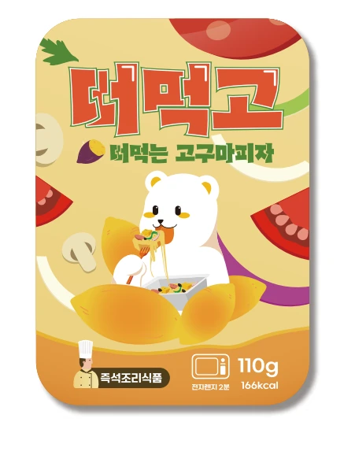

고구마를 다양한 제품으로고구마를 간편하게 즐길 수 있도록 아이스군고구마와 떠먹는 고구마피자를 만들고, 빵과 디저트에 활용할 수 있는 고구마 페이스트도 선보입니다.아이스군고구마설레고↗차갑게 해동하거나 따뜻하게 데워 즐기는 군고구마 간식입니다.떠먹는 고구마피자떠먹고↗숟가락으로 간편하게 떠먹는 고구마피자입니다. 취향에 맞는 토핑을 곁들여 보세요.유기농 고구마 페이스트바르고↗빵에 발라 먹거나 제빵·제과 재료로 활용할 수 있는 고구마 페이스트입니다.고구마 맛탕맛탕고↗달콤한 고구마 간식입니다. 닭볶음탕 같은 급식 메뉴에도 곁들일 수 있습니다.